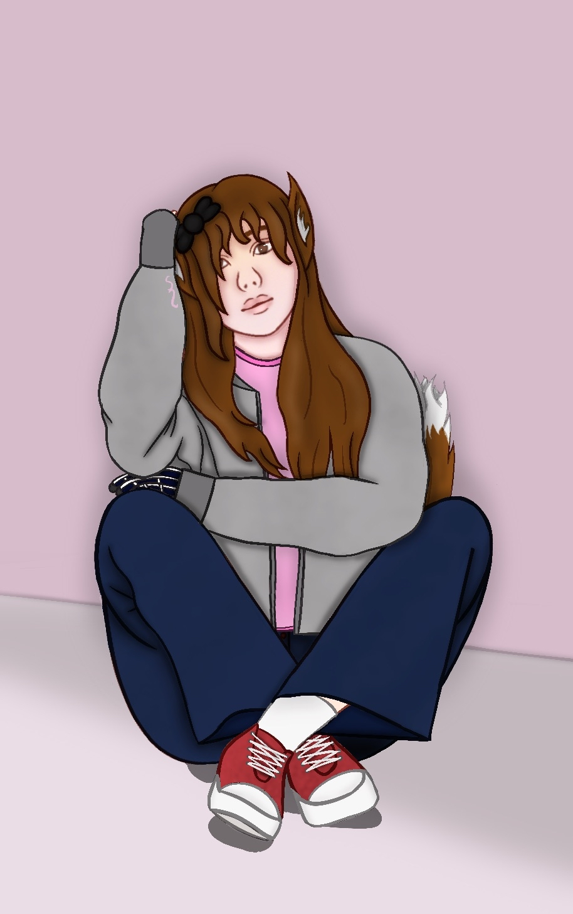
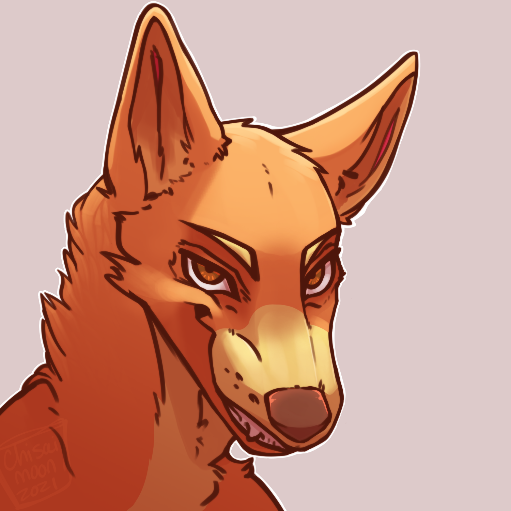

"Give me a chance, I know I can help!"
Title: The Dreamwalker
Full Name: Quentin Smith
Age: 18
Race: Human infected with Lycanthropy (Yet to transform)
Current Appearance: Often seen in dark jackets and multiple layers, never seen without a dark grey beanie. Dark brown curly hair and dark brown eyes. Most of his body covered in long, thin scars. Not visibly buff, but fit.
Hobbies: Swimming, watching TV, listening to music and podcasts
Skills: Can easily Lucid Dream, is a talented swimmer, smart under pressure and brave
Weaknesses: Too brave for his own good sometimes, very loyal and selfless and easily triggered.
Likes: Spending time with his friends, listening to music and sleeping. After collective months of avoiding it in the past, he takes the chance any time he can.
Dislikes: Spiders, fog, Christmas, cold metal and knives
Status: Living in the Basement with Leon and Ada
Affiliations: C.L.A.W.S (Basically an honorary member), The Realm, The Raid
Early Life
Quentin didn't have an easy childhood. He lost his mother around Christmas at four, and life only took a dark turn the years after that. What should have been a time of learning and flourishing in preschool turned into a time of pain and fear as the school gardener took advantage of him and his classmates in too many ways. As he got older and forgot, he never understood why he felt random sensations of touches or cold claws on his body, but one night everything changed. The man who haunted their childhoods had returned, and now he wanted revenge, killing his classmates in the proccess. His main targets were Quentin and his friend (and crush) Nancy. They managed to take him down once, but that didn't stop him. Quentin tried to stop him again by himself, but got himself the attention of a world-eating god. That didn't go well.
When he finally escaped The Entity's Realm, he was trapped. Since She took him in his dream, his body never left. Only his spirit did. Now he was back, but he couldn't regain control of himself. So he was stuck in a coma. And guess who could freely visit him? Yeah, that year was not a good one. He tried again, again and again to escape. Something, anything. Any crack to sneak through, but Freddy always found him and every time he did, he got worse. Eventually Quentin gave up. Then one day, his friends showed up. Well, friend. He was closest with Sugar out of all of them. He didn't believe they were real at first, wouldn't be the first time Freddy dressed up as someone else. But they were real. So he had to get them out. And after a long battle through too many dreams and close calls, they were out. But before he could even properly talk to his father and acclimatise to reality, he was whisked away to Replay.
Plot Life
Being downstairs, Quentin stayed quite distant from most of the adventures that happened upstairs. But when they had a plan to get Leon, Claire and anyone else they could find, Quentin jumped to help. With his very little hunting experience and old stories he remembered from Bill, he was ready to take on the Raccoon City zombies. The Tyrant? Not so much. When they actually found Leon, Quentin immediately saved him. So he's very glad he came. The trip was worse than he ever imagined, though. Nearly getting his head crushed in the first hour was not a good look. And then he nearly got eaten by a plant. Multiple, actually. Before Sugar flamethrowered them all at least. But they worked in a team and managed to escape. When he thought Ada died, he knew he had to be there for Leon. He's kinda regretting the fact she stuck around but he's glad she makes Leon happy.
A while later, Val invited him and Leon's colleagues at work to a rave. What 2010 era teenager says no to a rave? Of course he's coming. In hindsight, he wishes he wasn't as brave. He's pretty sure the raves back in America didn't involve mind control masks that make people kill and mate with each other. And they definitely did not involve deaths after falling from the rafters high on the ceiling. Unfortunately, this one did. And Quentin got one hell of a headache when he came back to life. He's well used to that by now, but he did not expect it to happen outside the Realm. The entire night was a mess and it shook the whole group. But Ada apologised and Leon understood what happened, so no hard feelings.
Then, the raid. They had to get the fox that ran the rave, after all. Quentin signed up to work with C.L.A.W.S and clear out a corrupt government facility to find Nicholas and free prisoners. It all was going pretty well until Ada went radio silent. When they found her, things went bad. Forced by a needle shot into his neck, Leon went feral. And once again, Quentin was too brave. Trying to talk a feral beast down does not work when you have two juicy legs and you are not fast. He managed to escape Leon after he bit his leg, but he nearly bled out while hiding. Eventually he regrouped with the others and healed, but the damage was done. He was due to eventually turn into a full werewolf. But they had found a few kidnapped friends, so time to regroup entirely. It all was going well, only one casualty to the robots. Then more robots filled the room. They had two goals, much akin to the rave. And this time, they had no chance against them. Quentin was well used to the sensations but he was trapped with Leon and the guilt made him feel so much worse. Two of the hackers they brought that he kinda forgot about saved them and he had never been so happy to see some computer nerds. They destroyed the robots and they all managed to escape with their clothes, dignity and morale in tatters.
No one was spared from pain that day. Sugar and Eren ripped of their vital senses, Micheal still recovering from an explosion and almost the entire group caught in the room of robots, it was a painful time. Even if no one died, none of them were the same afterwards. They don't talk about it. But Quentin knows it haunts them all, even as more time passes. He gets his own dreams about familiar cold metal pressing on and in him and being hunted by mindless beings through long, white hallways. He feels Leon struggling in his sleep like he's pulling away from something. He sees Ada and how she's opted for leggings instead of tights and how sometimes, she wears trousers and tight buttoned shirts. When he hangs around C.L.A.W.S, he sees how Jill and Carlos don't touch each other, their hands hovering slightly over the others shoulder. HUNK is quiet, but that's not really new. But he sees the way his chest shakes from his broken ribs and he can hear his hoarse breathing as he does his paperwork. He sadly sees himself in Steb, one of the prisoners they rescued. Steb had been a victim of the robots before, so he knew how they felt from his first time. But Quentin can't help but be a little jealous of the attention Steb gets, sometimes.
Of course, Sugar and Eren had it the worst. So to cope with their pain, Quentin, Leon and Ada went to Micheal's Sign Language lessons. At least they can communicate with Sugar. Quentin knows this aching, unrelenting pain too well by now, so he can deal with it. Maybe one day he'll break under the weight of it all, but he won't let it be today.
Current Life
He's a little fed up of being a third wheel. He's glad they have their own bed now, but god they kiss so much. And Leon will NOT stop whining. Now things have quietened down and there isn't a metaphorical fog looming over them, his anxiety is slowly rising. Any day now the lycan venom inside him will get to his brain and it'll be too late. When he's not having nightmares about his clusterfuck of a life, he's dreaming of scenarios where he transforms. He hides his anxiety, but it eats him up. He just hopes when he turns, he ends up like Leon. He can't hurt anyone else.
A close friend from the Realm, Sugar's been through a lot. Even if she's not Quentin's age, she acts younger. He enjoys hearing her stories and while her baby is the most annoying thing on the planet, he's glad she's finally happy after the Realm. Hopefully she'll get a rest one day.
Roommate number one, one of Quentin's closest friends. Even if he's older than Quentin, Leon just..fits. The both of them found themselves final survivors in many trials together and their skills helped each other survive many times. Their friendship only grew after Quentin came to rescue Leon and they escaped Raccoon City together. After the rave, Quentin thought their friendship was gone. Even more so after the raid. But Leon knows it was all the mask and the robot, so he doesn't blame Quentin. They're still as close as ever and Quentin still constantly teases him about Ada. At least Leon has some fluffy ears now.
Roommate number two, now referred to as 'the cat' by Quentin. As a joke, he always says. He doesn't wanna get on the bad side of her flips again. While Ada is as elusive as ever, they trust each other. He's just glad she finally confessed to Leon. Those two were insufferable in the Realm.
After rescuing her from public embarassment on Halloween, Harper wanted to stick around Quentin. That kinda surprised him, he knows he usually bores people. But with her band, she's got enough energy for everybody. Finally finding somebody to talk about music with has made Quentin happier and he's glad he can support her band. One day they'll hit it big.
An unlikely friend for the insomniac, but an appreciated one. She was one of the first people he reunited with after the Realm and while he is a little annoyed by her making him drug dealer bait, he appreciates the extra cash. And she lets him keep the evidence sometimes. Somehow she escaped the chaos of the rave and she has no idea the raid happened, but he knows she's smart. She'll work it out eventually. He just hopes she doesn't blast it over the news. They don't need that, not now. Not ever.
When Cheryl arrived in the Realm, Quentin immediately gravitated to the 'girl who fought demons and gods' that nobody could understand. He knew how it felt to have no one understand the horrors you've seen. And when he found out they were the same age, they clicked. Cheryl did most of the talking for the two of them, three when Leon showed up. She was a very brave girl and to Quentin, she felt like another part of him. So while she's gone, he feels incomplete. They say they'll find her. Again and again. But if they didn't have Gorge, he would've died before seeing her again. And he can't let that happen again.
He's fed up with fighting Frank. Frank is a stick of dynamite and to him, Quentin is the match. Frank will not stop assuming Quentin sent Krueger after him, which he doesn't understand. He knows the pain, too well. He knows anger is a common response. But he wishes Frank would just take a moment to understand. He hasn't talked to Frank in a long time, but he's heard enough has happened to him to fuck him up. He knows how it feels to be the Number One Pet of someone too powerful to avoid. Maybe they'd get along one day. He knows they're both too similar.
When he moved to Replay, he never expected a tiny fox to be on his spite list. He's heard a lot of stories of a small scientist fox that tormented Replay from Sugar, but he presumed the fox was gone. She made it sound that way. But when the others explained to him who caused the rave, he knew who he could direct his anger towards. And then after the raid, Quentin hates Nicholas. Every time he thinks of him, he is filled with the same rage that got him noticed by the Entity. He hopes this time, he'll be able to change something.
Every Dreamwalker needs his demons. And Quentin's is none other than the man who ruined his childhood. Now he sleeps under a ward, he knows he can finally rest. But the nightmares don't cease. On the rare times he does actually show up in his dreams, it's no different to the normal nightmares. He'll always haunt him. But Quentin is okay with that. It means he won't ever touch Nancy again.